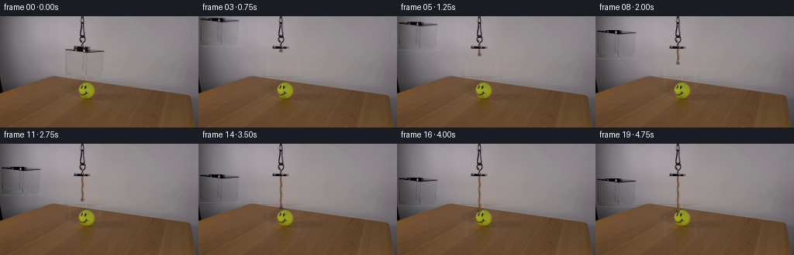
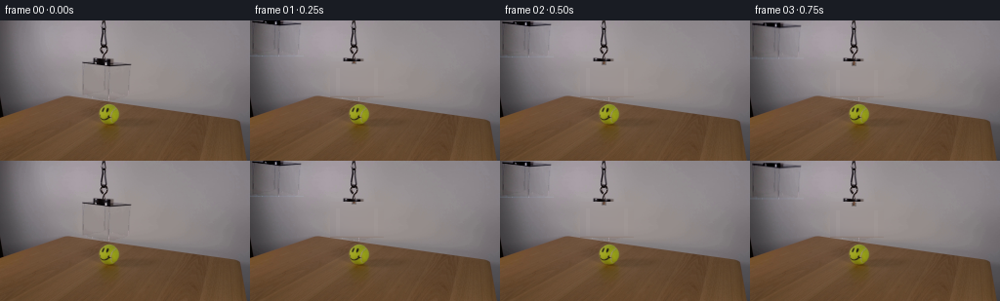
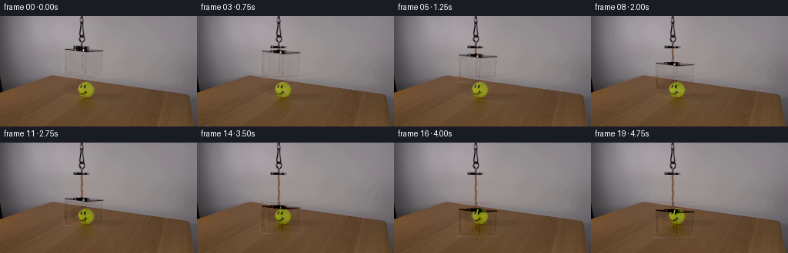
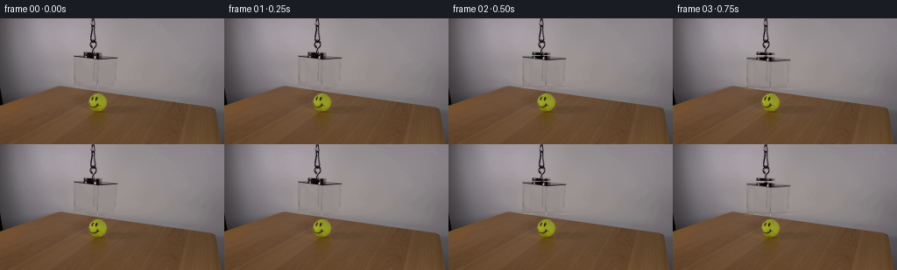

CODING AGENTS AS PIXEL WORLD MODELS
traex/DeepSeek-V4.1-Flash · 0099
点击播放 · 原生 RGB 像素
逐轮保存的候选
回放视频、检查图与代码变化。
每份候选均可单独播放。实际图片检查记录在下方工具轨迹中。
候选 01播放与检查图
点击播放 · 原生 RGB 像素


展开代码变化
--- 上一保存版本
+++ 本次保存版本
@@ -0,0 +1,138 @@
+from pathlib import Path
+
+import cv2
+import numpy as np
+from PIL import Image
+
+import artifact_io
+
+
+CASE_DIR = Path(__file__).resolve().parent
+FRAME_COUNT = 20
+FPS = 4.0
+
+
+def _smoothstep(value):
+ value = float(np.clip(value, 0.0, 1.0))
+ return value * value * (3.0 - 2.0 * value)
+
+
+def _background_plate(frame):
+ """Remove the suspended box while retaining the cord and the table."""
+ plate = frame.astype(np.float32).copy()
+ height, width = plate.shape[:2]
+ xs = np.arange(width, dtype=np.float32)
+
+ # The wall is a smooth, broad lighting gradient. A row-wise polynomial fit
+ # reconstructs it cleanly through the transparent box without smearing the
+ # lid and rim into the background.
+ valid = np.r_[np.arange(0, 81), np.arange(136, width)]
+ for y in range(42, 79):
+ fitted = np.stack(
+ [
+ np.polyval(np.polyfit(xs[valid], plate[y, valid, channel], 4), xs)
+ for channel in range(3)
+ ],
+ axis=1,
+ )
+ plate[y, 82:137] = fitted[82:137]
+
+ return plate
+
+
+def _box_residual(frame, plate):
+ """Recover the box's tint, rim, and edge highlights from the source frame."""
+ y0, y1 = 42, 79
+ x0, x1 = 82, 137
+ return frame[y0:y1, x0:x1].astype(np.float32) - plate[y0:y1, x0:x1]
+
+
+def _translated_residual(residual, drop, width, height):
+ matrix = np.array([[1.0, 0.0, 0.0], [0.0, 1.0, drop]], dtype=np.float32)
+ return cv2.warpAffine(
+ residual,
+ matrix,
+ (width, height),
+ flags=cv2.INTER_LINEAR,
+ borderMode=cv2.BORDER_CONSTANT,
+ borderValue=0,
+ )
+
+
+def _draw_cord(canvas, end_y):
+ """Extend the original rope down to the moving box attachment point."""
+ height, width = canvas.shape[:2]
+ end_y = int(np.clip(round(end_y), 43, height - 1))
+ ys = np.arange(42, end_y + 1, dtype=np.float32)
+ if len(ys) == 0:
+ return
+
+ centers = 106.0 + 0.32 * np.sin((ys - 8.0) * 0.46)
+ for y, center in zip(ys.astype(int), centers):
+ for x in range(103, 110):
+ distance = abs(x - center)
+ alpha = float(np.exp(-((distance / 1.22) ** 2)))
+ if alpha < 0.035:
+ continue
+
+ twist = 0.5 + 0.5 * np.sin((y - 3.0) * 0.72 + x * 0.35)
+ if x <= center:
+ rope = np.array([89.0, 55.0, 37.0])
+ else:
+ rope = np.array([139.0, 83.0, 47.0])
+ rope = rope * (0.84 + 0.22 * twist)
+ blend = alpha * 0.88
+ canvas[y, x] = canvas[y, x] * (1.0 - blend) + rope * blend
+
+ # A small darker loop where the rope meets the acrylic lid.
+ for y in range(max(42, end_y - 2), min(height, end_y + 2)):
+ for x in range(104, 109):
+ canvas[y, x] *= 0.78
+
+
+def _finish_frame(frame):
+ return np.clip(np.rint(frame), 0, 255).astype(np.uint8)
+
+
+def generate():
+ source = np.asarray(Image.open(CASE_DIR / "first_frame.png").convert("RGB"))
+ plate = _background_plate(source)
+ residual = _box_residual(source, plate)
+ height, width = source.shape[:2]
+ max_drop = 45.0
+
+ frames = []
+ for index in range(FRAME_COUNT):
+ if index == 0:
+ frames.append(source.copy())
+ continue
+
+ time_s = index / FPS
+ progress = _smoothstep((time_s - 0.15) / 4.25)
+ drop = max_drop * progress
+
+ frame = plate.copy()
+ _draw_cord(frame, 43.0 + drop)
+ frame += _translated_residual(residual, drop, width, height)
+
+ # A faint cool reflection on the leading face reinforces the acrylic
+ # material as it passes in front of the ball.
+ box_top = 42.0 + drop
+ box_bottom = 78.0 + drop
+ y0 = max(0, int(np.floor(box_top + 7)))
+ y1 = min(height, int(np.ceil(box_bottom - 2)))
+ if y1 > y0:
+ yy = np.arange(y0, y1, dtype=np.float32)[:, None]
+ vertical = 0.72 + 0.28 * np.sin(np.clip((yy - box_top) / 36.0, 0, 1) * np.pi)
+ band = np.zeros((y1 - y0, width, 1), dtype=np.float32)
+ band[:, 88:92, 0] = 4.0 * vertical
+ band[:, 127:131, 0] = 3.0 * vertical
+ frame[y0:y1] += band
+
+ frames.append(_finish_frame(frame))
+
+ return np.stack(frames)
+
+
+if __name__ == "__main__":
+ artifact_io.save(generate(), CASE_DIR)
候选 02播放与检查图
点击播放 · 原生 RGB 像素

展开代码变化
--- 上一保存版本
+++ 本次保存版本
@@ -48,7 +48,7 @@
def _translated_residual(residual, drop, width, height):
- matrix = np.array([[1.0, 0.0, 0.0], [0.0, 1.0, drop]], dtype=np.float32)
+ matrix = np.array([[1.0, 0.0, 82.0], [0.0, 1.0, 42.0 + drop]], dtype=np.float32)
return cv2.warpAffine(
residual,
matrix,
候选 03播放与检查图
点击播放 · 原生 RGB 像素


展开代码变化
--- 上一保存版本
+++ 本次保存版本
@@ -41,10 +41,45 @@
def _box_residual(frame, plate):
- """Recover the box's tint, rim, and edge highlights from the source frame."""
+ """Recover a clean acrylic-box layer from the source frame."""
y0, y1 = 42, 79
x0, x1 = 82, 137
- return frame[y0:y1, x0:x1].astype(np.float32) - plate[y0:y1, x0:x1]
+ raw = frame[y0:y1, x0:x1].astype(np.float32) - plate[y0:y1, x0:x1]
+
+ # Acrylic faces only tint and reflect what lies behind them. Keeping the
+ # broad residual within a narrow range prevents wall shading and the rope
+ # from being copied as an opaque dark object.
+ residual = np.clip(raw, -18.0, 10.0)
+
+ # Retain the narrow, real reflections on the two sides and center seam.
+ strong = np.clip(raw, -27.0, 13.0)
+ for start, end in ((2, 5), (23, 31), (48, 51)):
+ residual[:, start:end] = strong[:, start:end]
+
+ # The cord hangs directly through the middle of the source lid, so those
+ # pixels cannot serve as a moving lid texture. Reconstruct that span as a
+ # shallow elliptical rim, using the uncontaminated acrylic face as its base.
+ yy, xx = np.mgrid[0:6, 0:residual.shape[1]]
+ center_x, center_y = 108.0 - x0, 44.5 - y0
+ radius = np.sqrt(
+ ((xx - center_x) / 24.5) ** 2 + ((yy - center_y) / 3.4) ** 2
+ )
+ ring = np.exp(-((radius - 1.0) / 0.24) ** 2)
+ face = np.median(residual[6:14], axis=0)
+ lid = face[None, :, :] + ring[:, :, None] * np.array(
+ [-18.0, -17.0, -17.0], dtype=np.float32
+ )
+ lid += np.array([-2.0, -1.5, -2.0], dtype=np.float32)
+
+ central = np.clip((xx - 9.0) / 4.0, 0.0, 1.0)
+ central *= np.clip((45.0 - xx) / 4.0, 0.0, 1.0)
+ residual[:6] = residual[:6] * (1.0 - central[:, :, None])
+ residual[:6] += lid * central[:, :, None]
+
+ # The table edge runs through the source crop's last row. It is a faint
+ # catchlight on the acrylic, not a bright strip that should cover the ball.
+ residual[-1] = np.minimum(residual[-1], np.array([1.0, 3.0, 5.0]))
+ return residual
def _translated_residual(residual, drop, width, height):
候选 04播放与检查图
可观测工具轨迹
实际执行的命令与返回图片。
命令 1exit 0
/bin/bash -c 'cat prompt.txt'
命令 2exit 0
/bin/bash -c 'cat GENERATION_RULES.md'
命令 3exit 0
/bin/bash -c "find . -maxdepth 2 -type f -printf '%p %s bytes\\n' | sort"
命令 4exit 0
/bin/bash -c 'file first_frame.png && identify first_frame.png 2>/dev/null || true'
命令 5exit 0
/bin/bash -c "sed -n '1,240p' artifact_io.py"
命令 6exit 0
/bin/bash -c "sed -n '1,220p' player_template.html"
命令 7exit 0
/bin/bash -c "python - <<'PY'
from PIL import Image
import numpy as np
im=Image.open('first_frame.png').convert('RGB')
a=np.array(im)
print(im.size, a.dtype, a.shape)
print('min/max/mean', a.min((0,1)), a.max((0,1)), a.mean((0,1)))
# most frequent quantized colors
q=(a//16)*16
c,n=np.unique(q.reshape(-1,3),axis=0,return_counts=True)
for i in np.argsort(n)[-20:][::-1]: print(tuple(c[i]), int(n[i]))
PY"命令 8exit 0
/bin/bash -c "python - <<'PY'
from PIL import Image
import numpy as np
im=np.array(Image.open('first_frame.png').convert('RGB'))
g=(0.299*im[:,:,0]+0.587*im[:,:,1]+0.114*im[:,:,2])
# adaptive ASCII at 128x72 averaging blocks 2x2
chars=' .,:;irsXA253hMHGS#9B&@'
for y in range(0,144,2):
row=''
for x in range(0,256,2):
v=g[y:y+2,x:x+2].mean()
row+=chars[min(len(chars)-1,int(v/256*len(chars)))]
print(row)
PY"命令 9exit 0
/bin/bash -c "python - <<'PY'
from PIL import Image
import numpy as np
a=np.array(Image.open('first_frame.png').convert('RGB')).astype(int)
R,G,B=a[:,:,0],a[:,:,1],a[:,:,2]
conds={
'orange':(R>80)&(R>G*1.35)&(G>B*1.1),
'yellowgreen':(G>70)&(G>R*1.05)&(G>B*1.2),
'verydark':(R<45)&(G<45)&(B<45),
'bright':(R>180)&(G>180)&(B>180),
'red':(R>90)&(R>G*1.6)&(R>B*1.3),
}
for name,m in conds.items():
ys,xs=np.where(m)
print(name,len(xs), 'bbox', (xs.min(),ys.min(),xs.max(),ys.max()) if len(xs) else None)
# row/col summaries top
if len(xs):
ux,cx=np.unique(xs,return_counts=True); print(' x peaks',[(int(ux[i]),int(cx[i])) for i in np.argsort(cx)[-10:][::-1]])
uy,cy=np.unique(ys,return_counts=True); print(' y peaks',[(int(uy[i]),int(cy[i])) for i in np.argsort(cy)[-10:][::-1]])
PY"命令 10exit 0
/bin/bash -c "python - <<'PY'
from PIL import Image
import numpy as np
a=np.array(Image.open('first_frame.png').convert('RGB'))
# print representative pixel values each 16 px grid
for y in range(8,144,8):
print(f'y={y:3}', ' '.join('%02x%02x%02x'%tuple(a[y,x]) for x in range(8,256,16)))
PY"命令 11exit 0
/bin/bash -c "python - <<'PY'
try:
import cv2; print('cv2',cv2.__version__)
except Exception as e: print('no cv2',e)
try:
import scipy; print('scipy',scipy.__version__)
except Exception as e: print('no scipy',e)
PY"命令 12exit 0
/bin/bash -c "python - <<'PY'
from PIL import Image
import numpy as np
a=np.array(Image.open('first_frame.png').convert('RGB'))
# crop top left 0:130 0:100 print ascii where dark
l=(.299*a[:,:,0]+.587*a[:,:,1]+.114*a[:,:,2])
# 1 char per pixel but only 100 rows x130 cols
chars=' .:-=+*#%@'
for y in range(100):
row=''
for x in range(0,130):
v=l[y,x]
row += chars[min(9,int(v/26))]
print(f'{y:02d} '+row)
PY"命令 13exit 0
/bin/bash -c "python - <<'PY'
from PIL import Image
import numpy as np
a=np.array(Image.open('first_frame.png').convert('RGB')).astype(np.float32)
g=a.mean(2)
# Sobel-ish gradients
for y in range(0,105,4):
s=''
for x in range(0,150,2):
gy=np.abs(g[min(y+2,143),x]-g[max(y-2,0),x])
gx=np.abs(g[y,min(x+2,255)]-g[y,max(x-2,0)])
m=max(gx,gy)
s += ' ' if m<4 else '.' if m<8 else ':' if m<16 else '*' if m<32 else '#'
print(f'{y:03d} {s}')
PY"命令 14exit 0
/bin/bash -c "python - <<'PY'
from PIL import Image
import numpy as np
a=np.array(Image.open('first_frame.png').convert('RGB'))
for y in [76,77,78,79,80,81,82,83,84,85,86,87,88,89,90,91,92,93,94,95,96,97,98,99,100,101,102,103,104,105,106,107,108,109,110]:
print(y, ''.join('#' if (a[y,x].astype(int).mean()<50) else ' ' for x in range(0,256)))
PY"命令 15exit 0
/bin/bash -c "python - <<'PY'
from PIL import Image
import numpy as np
a=np.array(Image.open('first_frame.png').convert('RGB')).astype(int)
# save annotated grids? print row dark runs / vertical bright lines via diff
for y in [36,38,40,42,44,46,48,50,55,60,65,70,75,78,80,82,84,86,88,90,92,94,96,98,100]:
print('\\ny',y)
# run lengths of approximate color classes in x
# identify exact/near gradients by derivatives
lum=a[y].mean(1)
d=np.abs(np.diff(lum))
print('x', [(int(x), int(lum[x]), round(float(d[x]),1)) for x in range(1,255) if d[x]>12][:40])
PY"命令 16exit 0
/bin/bash -c "python - <<'PY'
import cv2, numpy as np
from PIL import Image
a=cv2.imread('first_frame.png')
hsv=cv2.cvtColor(a,cv2.COLOR_BGR2HSV)
# ranges for orange cord (h 5-25 deg OpenCV => 3-13), saturated
for name,lo,hi in [
('orange',(0,80,50),(35,255,255)),
('yellow',(20,40,40),(50,255,255)),
('cyan',(70,10,80),(130,255,255)),
('dark',(0,0,0),(180,255,60)),
('neutral_bright',(0,0,80),(180,30,255))]:
m=cv2.inRange(hsv,np.array(lo),np.array(hi))>0
ys,xs=np.where(m)
print(name, len(xs), (xs.min(),ys.min(),xs.max(),ys.max()) if len(xs) else None)
# connected comps sizes
n,lab,stats,cents=cv2.connectedComponentsWithStats(m.astype(np.uint8),8)
comps=sorted([(stats[i,4], tuple(stats[i,:4]), tuple(np.round(cents[i],1))) for i in range(1,n)], reverse=True)[:10]
print(comps)
PY"命令 17exit 0
/bin/bash -c "python - <<'PY'
import cv2,numpy as np
from PIL import Image
a=cv2.imread('first_frame.png')
g=cv2.cvtColor(a,cv2.COLOR_BGR2GRAY)
# Canny edges, line transform
ed=cv2.Canny(g,30,80)
lines=cv2.HoughLinesP(ed,1,np.pi/180,threshold=30,minLineLength=35,maxLineGap=8)
arr=[]
for l in lines[:,0]:
x1,y1,x2,y2=map(int,l); L=((x2-x1)**2+(y2-y1)**2)**.5
arr.append((L,(x1,y1,x2,y2)))
for x in sorted(arr,reverse=True)[:60]: print(round(x[0],1),x[1])
Image.fromarray(ed).save('.tmp/edges.png')
PY"命令 18exit 0
/bin/bash -c "python - <<'PY'
from PIL import Image
import numpy as np
a=np.array(Image.open('first_frame.png').convert('RGB'))
# upscale nearest into tmp for own numeric analysis
Image.fromarray(a).resize((1024,576),Image.Resampling.NEAREST).save('.tmp/frame_nearest.png')
# print 100x55 with block std/edge maybe
PY"命令 19exit 0
/bin/bash -c "python - <<'PY'
from PIL import Image
import numpy as np
a=np.array(Image.open('first_frame.png').convert('RGB')).astype(float)
# Find ball: saturation yellow/green mask and print patches colors around 100-122,84-118
for y in range(82,122):
row=''
for x in range(94,130):
r,g,b=a[y,x]
if g>r*1.15 and g>b*1.3 and g>40: c='Y'
elif r+g+b<100:c='#'
elif r+g+b<220:c='d'
elif r+g+b>400:c='O'
elif r+g+b>330:c='o'
elif r>g*1.2:c='r'
else:c='.'
row+=c
print(f'{y:03d} {row}')
PY"命令 20exit 0
/bin/bash -c "python - <<'PY'
from PIL import Image
import numpy as np
a=np.array(Image.open('first_frame.png').convert('RGB')).astype(int)
# print local luminance maps for whole scene coarse every 2px using 10 levels
l=(a[:,:,0]*299+a[:,:,1]*587+a[:,:,2]*114)//1000
chars=' .:-=+*#%@'
for y in range(0,144,3):
print(f'{y:03d} '+''.join(chars[min(9,l[y:y+3,x:x+3].mean().astype(int)//26)] for x in range(0,256,3)))
PY"命令 21exit 0
/bin/bash -c "python - <<'PY'
from PIL import Image
import numpy as np
a=np.array(Image.open('first_frame.png').convert('RGB')).astype(int)
# Print top colors in selected ball crop exact/near clusters
for name,(x0,y0,x1,y1) in {'ball':(96,82,125,120),'box':(75,5,145,70),'cord':(98,0,118,78),'table':(150,90,250,140)}.items():
q=(a[y0:y1,x0:x1]//8)*8
c,n=np.unique(q.reshape(-1,3),axis=0,return_counts=True)
print('\\n',name)
for i in np.argsort(n)[-12:][::-1]:print(tuple(c[i]),n[i])
PY"命令 22exit 0
/bin/bash -c "python - <<'PY'
from PIL import Image
import numpy as np
a=np.array(Image.open('first_frame.png').convert('RGB')).astype(int)
# determine where orange cord: HSV condition and list per-row ranges
import colorsys
R,G,B=a[:,:,0],a[:,:,1],a[:,:,2]
m=(R>90)&(R>G*1.15)&(G>B*1.1)&(B<80)
for y in range(0,80):
xs=np.where(m[y])[0]
# contiguous runs len>=2
runs=[]
for x in xs:
if not runs or x>runs[-1][-1]+1:runs.append([x])
else:runs[-1].append(x)
rr=[(r[0],r[-1]) for r in runs if len(r)>=2]
if rr:print(y,rr)
PY"命令 23exit 0
/bin/bash -c "python - <<'PY'
from PIL import Image
import numpy as np
a=np.array(Image.open('first_frame.png').convert('RGB')).astype(int)
# patch around presumed cord x100-115 y0-80 print RGB and annotate orange
for y in range(0,80,2):
row=''
for x in range(95,120):
r,g,b=a[y,x]
if r>80 and r>g*1.25 and g>b*1.25: c='O'
elif r+g+b<80:c='#'
elif r+g+b<180:c='d'
elif r+g+b<300:c='.'
elif r+g+b<420:c='o'
else:c=' '
row+=c
print(f'{y:02d} {row}')
PY"命令 24exit 0
/bin/bash -c "python - <<'PY'
from PIL import Image
import numpy as np
a=np.array(Image.open('first_frame.png').convert('RGB')).astype(int)
# exact RGB around x104 y0-80
for y in range(0,80,2):
print(f'{y:02d}', ' '.join('%3d,%3d,%3d'%tuple(a[y,x]) for x in range(101,114)))
PY"命令 25exit 0
/bin/bash -c "python - <<'PY'
import cv2,numpy as np
from PIL import Image
a=cv2.imread('first_frame.png')
g=cv2.cvtColor(a,cv2.COLOR_BGR2GRAY)
# lsd
lsd=cv2.createLineSegmentDetector(cv2.LSD_REFINE_STD)
lines, widths, prec, nfa = lsd.detect(g)
res=[]
if lines is not None:
for i,l in enumerate(lines[:,0]):
x1,y1,x2,y2=l; L=np.hypot(x2-x1,y2-y1); ang=np.degrees(np.arctan2(y2-y1,x2-x1))
if L>10:res.append((L,ang,tuple(np.round(l,1))))
for x in sorted(res,reverse=True)[:100]:print(f'{x[0]:6.1f} {x[1]:7.1f} {x[2]}')
PY"命令 26exit 0
/bin/bash -c "python - <<'PY'
from PIL import Image
import numpy as np
a=np.array(Image.open('first_frame.png').convert('RGB')).astype(int)
# Print small colored map 1px each for ball region with chars based HSV
import colorsys
for y in range(82,122):
s=''
for x in range(94,130):
r,g,b=a[y,x]/255
h,ss,v=colorsys.rgb_to_hsv(r,g,b)
if ss>.3 and h<.1 and v>.15: c='O'
elif ss>.3 and .1<=h<.2: c='Y'
elif ss>.2 and .2<=h<.4: c='G'
elif v<.15:c='#'
elif v<.3:c='d'
elif v<.55:c='.'
elif v<.75:c='o'
else:c=' '
s+=c
print(f'{y:03d} {s}')
PY"命令 27exit 0
/bin/bash -c "python - <<'PY'
from PIL import Image
import numpy as np
a=np.array(Image.open('first_frame.png').convert('RGB')).astype(int)
# luminance boundary via background estimation. Print RGB at x 30:140 rows 0:80 with every 4 px
for y in range(0,82,4):
print(f'{y:02d}', ' '.join('%3d'%int(a[y,x].mean()) for x in range(24,144,4)))
PY"命令 28exit 0
/bin/bash -c "python - <<'PY'
from PIL import Image
import numpy as np, cv2
a=np.array(Image.open('first_frame.png').convert('RGB'))
hsv=cv2.cvtColor(a,cv2.COLOR_RGB2HSV)
# top y<78 chroma max-min, top pixels
ch=a.max(2).astype(int)-a.min(2).astype(int)
for y in range(0,78,2):
xs=np.where(ch[y]>25)[0]
runs=[]
for x in xs:
if not runs or x>runs[-1][-1]+1:runs.append([int(x)])
else:runs[-1].append(int(x))
rr=[(r[0],r[-1],int(ch[y,r].max())) for r in runs if len(r)>=2]
if rr:print(y,rr[:20])
# strongest chroma top
ys,xs=np.where((ch>30)&(np.indices(ch.shape)[0]<78))
vals=[]
for y,x in zip(ys,xs): vals.append((int(ch[y,x]),int(x),int(y),tuple(a[y,x])))
for v in sorted(vals,reverse=True)[:100]:print(v)
PY"命令 29exit 0
/bin/bash -c "python - <<'PY'
from PIL import Image
import numpy as np
a=np.array(Image.open('first_frame.png').convert('RGB')).astype(int)
# determine horizontal/vertical gradients by row medians. print rows with low median gradient (face) and color medians
for y in range(0,80):
x=np.arange(85,137)
# median color in region
med=np.median(a[y,85:137],axis=0)
# print chroma and luminance
print(f'{y:02d} {med[0]:.0f} {med[1]:.0f} {med[2]:.0f} lum{med.mean():.0f}')
PY"命令 30exit 0
/bin/bash -c "python - <<'PY'
from PIL import Image
import numpy as np
a=np.array(Image.open('first_frame.png').convert('RGB')).astype(int)
# box interior bbox infer: compare local neighborhood
for y in [48,50,52,55,60,65,70,72,74,76,78,80,82,84,86]:
# top row values by 8 x steps 0..255
print(f'{y:02d}', ' '.join('%3d'%a[y,x].mean() for x in range(0,256,8)))
PY"命令 31exit 0
/bin/bash -c "python - <<'PY'
from PIL import Image
import numpy as np
a=np.array(Image.open('first_frame.png').convert('RGB')).astype(int)
# print RGB of presumed box bottom edges each row x=0..160 every 2 with values compressed hue
for y in range(76,90):
print('\\ny',y)
for x in range(0,180,4):
print(f'{x}:{a[y,x,0]:02x}{a[y,x,1]:02x}{a[y,x,2]:02x}',end=' ')
print()
PY"命令 32exit 0
/bin/bash -c "python - <<'PY'
from PIL import Image
import numpy as np
a=np.array(Image.open('first_frame.png').convert('RGB')).astype(float)
# approximate gradient edge scores with Sobel
import cv2
g=cv2.cvtColor(a.astype(np.uint8),cv2.COLOR_RGB2GRAY)
sx=cv2.Sobel(g,cv2.CV_32F,1,0,ksize=3); sy=cv2.Sobel(g,cv2.CV_32F,0,1,ksize=3)
mag=np.hypot(sx,sy)
# report top x for each y
for y in range(0,80,2):
inds=np.argsort(mag[y])[-15:][::-1]
print(y, [(int(x),round(float(mag[y,x]),0)) for x in inds[:8]])
PY"命令 33exit 0
/bin/bash -c "python - <<'PY'
import cv2,numpy as np
from PIL import Image
a=np.array(Image.open('first_frame.png').convert('RGB'))
g=cv2.cvtColor(a,cv2.COLOR_RGB2GRAY)
sx=cv2.Sobel(g,cv2.CV_32F,1,0,ksize=3);sy=cv2.Sobel(g,cv2.CV_32F,0,1,ksize=3)
m=np.hypot(sx,sy)
chars=' .:-=+*#%@'
print(' '+''.join(str((x//10)%10) for x in range(70,150)))
print(' '+''.join(str(x%10) for x in range(70,150)))
for y in range(32,86):
s=''
for x in range(70,150):
v=m[y,x]
s+=chars[min(9,int(v/70))]
print(f'{y:03d} {s}')
PY"命令 34exit 0
/bin/bash -c "python - <<'PY'
from PIL import Image
import numpy as np, colorsys
a=np.array(Image.open('first_frame.png').convert('RGB')).astype(float)
mx=a.max(2); mn=a.min(2); sat=(mx-mn)/(mx+1e-6)
# top pixels with high saturation
for y in range(0,78):
xs=np.where(sat[y]>.18)[0]
if len(xs):
vals=[]
for x in xs:
r,g,b=a[y,x]/255
h,s,v=colorsys.rgb_to_hsv(r,g,b)
vals.append((int(x),round(h*360),round(s*100),tuple(a[y,x].astype(int))))
print(y, vals[:40])
PY"命令 35exit 0
/bin/bash -c "python - <<'PY'
from PIL import Image
import numpy as np
a=np.array(Image.open('first_frame.png').convert('RGB')).astype(float)
# ball estimate center from green mask via connected comps cv2
import cv2
R,G,B=a[:,:,0],a[:,:,1],a[:,:,2]
m=((G>R*1.05)&(G>B*1.2)&(G>45)).astype(np.uint8)
n,lab,stats,cent=cv2.connectedComponentsWithStats(m,8)
print([(stats[i,4], stats[i,:4].tolist(),cent[i].tolist()) for i in range(1,n) if stats[i,4]>5])
# shadow center etc
PY"命令 36exit 0
/bin/bash -c "python - <<'PY'
from PIL import Image
import numpy as np
a=np.array(Image.open('first_frame.png').convert('RGB')).astype(float)
# ball apparent ellipse likely x 94..136, y82..120. Determine edge via local diff to background trend. Print color-coded row with x labels
for y in range(80,123):
s=''
for x in range(85,145):
r,g,b=a[y,x]
if g>r*1.2 and g>b*1.8:c='Y'
elif r>g*1.1 and g>b*1.1 and (r+g+b)<250:c='O'
elif r+g+b<110:c='#'
elif r+g+b<200:c='d'
elif r+g+b>390:c='O'
elif r+g+b>320:c='o'
else:c='.'
s+=c
print(f'{y:03d} {s}')
PY"命令 37exit 0
/bin/bash -c "python - <<'PY'
from PIL import Image
import numpy as np
a=np.array(Image.open('first_frame.png').convert('RGB')).astype(int)
for y in [82,84,86,88,90,92,94,96,98,100,102,104,106,108,110,112,114,116,118,120]:
print('\\ny',y)
for x in range(90,141,2): print(f'{x}:{a[y,x,0]:3},{a[y,x,1]:3},{a[y,x,2]:3}',end=' | ')
print()
PY"命令 38exit 0
/bin/bash -c "python - <<'PY'
from PIL import Image
import numpy as np, cv2
a=np.array(Image.open('first_frame.png').convert('RGB'))
# Let's create candidate masking based on hue. Box likely from x84 to133 y47 to77 etc. Use foreground diff against smoothed background? show cropped upscaled 8x perhaps impossible visual, but save
# Analyze edge maps and masks for box rectangle
# mean around interior vs outside: box has glass tint, boundaries 84 and 133
for x in range(75,145):
# median vertical chroma / lum in y47:75
med=np.median(a[47:76,x].astype(int),axis=0)
if x%2==0:print(x,tuple(med.astype(int)))
PY"命令 39exit 0
/bin/bash -c "python - <<'PY'
from PIL import Image
import numpy as np
a=np.array(Image.open('first_frame.png').convert('RGB')).astype(int)
# print table region patterns? calculate median RGB each x for y105:135
for x in range(0,256,8):
med=np.median(a[105:135,x],axis=0)
print(x,tuple(med.astype(int)))
PY"命令 40exit 0
/bin/bash -c "python - <<'PY'
from PIL import Image
import numpy as np, cv2
a=np.array(Image.open('first_frame.png').convert('RGB')).astype(np.float32)
# ball circle boundary at bottom. scan expected center 113, 99 radius20 and edge gradient radial
cx,cy=113,99
for ang in range(0,360,15):
th=np.deg2rad(ang)
best=[]
for r in np.arange(14,28,.5):
x=int(round(cx+r*np.cos(th)));y=int(round(cy+r*np.sin(th)))
if 0<=x<256 and 0<=y<144:best.append((r,a[y,x].tolist()))
print(ang,[(round(r,1),tuple(np.array(v).astype(int))) for r,v in best[-4:]])
PY"命令 41exit 0
/bin/bash -c "python - <<'PY'
from PIL import Image
import numpy as np
a=np.array(Image.open('first_frame.png').convert('RGB')).astype(int)
# rgb selected points around suspected ball center and table
for y in [82,84,86,88,90,92,94,96,98,100,102,104,106,108,110,112,114,116,118,120,122]:
print(y,[(x,tuple(a[y,x])) for x in [92,94,96,98,100,102,104,106,108,110,112,114,116,118,120,122,124,126,128,130,132,134]])
PY"命令 42exit 0
/bin/bash -c "python - <<'PY'
from PIL import Image
import numpy as np
a=np.array(Image.open('first_frame.png').convert('RGB')).astype(int)
# Face map: compare green excess vs typical brown. Use color distance to local table median; print at 1px ball crop
crop=a[82:122,94:130]
# show hue with letters based green excess
for y in range(crop.shape[0]):
s=''
for x in range(crop.shape[1]):
r,g,b=crop[y,x]
ex=g-(r+b)/2
if ex>25:c='G'
elif ex>8:c='g'
elif g>r*1.1 and g>b*1.4:c='Y'
elif r+g+b<110:c='#'
elif r+g+b<170:c='d'
elif r+g+b<260:c='.'
elif r+g+b>400:c='O'
else:c='o'
s+=c
print(f'{82+y:03d} {s}')
PY"命令 43exit 0
/bin/bash -c "python - <<'PY'
from PIL import Image
import numpy as np
a=np.array(Image.open('first_frame.png').convert('RGB')).astype(float)
# fit box face plane model: exact bilinear? derive corners via observed x84/133 boundaries and bottom shadow
# estimate x edges from vertical color at y60
for y in [46,47,48,50,55,60,65,70,75,76,77,78,79,80,81,82,83,84]:
vals=[]
for x in range(70,145):
r,g,b=a[y,x]
# gradient abs local
grad=np.abs(a[y,min(x+1,255)]-a[y,max(x-1,0)]).mean()
vals.append((grad,x,tuple(a[y,x].astype(int))))
print(y,sorted(vals,reverse=True)[:8])
PY"命令 44exit 0
/bin/bash -c "python - <<'PY'
from PIL import Image
import numpy as np
a=np.array(Image.open('first_frame.png').convert('RGB')).astype(int)
# Print pixels of face at x98..121 y86..118 as exact, to infer smile features
for y in range(84,119):
print(y, ' '.join(f'{a[y,x,0]:02x}{a[y,x,1]:02x}{a[y,x,2]:02x}' for x in range(98,123)))
PY"命令 45exit 0
/bin/bash -c "python - <<'PY'
from PIL import Image
import numpy as np
a=np.array(Image.open('first_frame.png').convert('RGB')).astype(float)
for x0,x1 in [(102,110),(103,109),(104,108)]:
p=a[0:38,x0:x1].reshape(-1,3)
print(x0,x1,'mean',p.mean(0),'median',np.median(p,0),'max',p.max(0),'min',p.min(0))
# top cord columns median y 0:38
for x in range(99,113): print(x,np.median(a[0:38,x],axis=0).astype(int))
PY"命令 46exit 0
/bin/bash -c "python - <<'PY'
from PIL import Image
import numpy as np
a=np.array(Image.open('first_frame.png').convert('RGB')).astype(float)
# median color orange table region vs ball central green. use x y
print('table med',np.median(a[106:119,104:121],axis=(0,1)))
print('ball med',np.median(a[94:101,104:121],axis=(0,1)))
# output differences
PY"命令 47exit 0
/bin/bash -c "python - <<'PY'
from PIL import Image
import numpy as np
a=np.array(Image.open('first_frame.png').convert('RGB')).astype(float)
# top box rectangle median by y and x ranges
for y in range(46,77):
print(y,'L',np.median(a[y,74:84],0).astype(int),'I',np.median(a[y,85:133],0).astype(int),'R',np.median(a[y,134:144],0).astype(int))
PY"命令 48exit 0
/bin/bash -c "python - <<'PY'
from PIL import Image
import numpy as np
a=np.array(Image.open('first_frame.png').convert('RGB')).astype(float)
# Estimate box bottom curved edges from median differences using color model outside. Check per row x from 60..150: find where difference from extrapolated left/right bg
# Print mean rgb around corners x60..100 y70..86 every x2
for y in range(70,88,2):
print('y',y,' '.join(f'{x}:{tuple(a[y,x].astype(int))}' for x in range(60,101,4)))
PY"命令 49exit 0
/bin/bash -c "python - <<'PY'
from PIL import Image
import numpy as np
a=np.array(Image.open('first_frame.png').convert('RGB')).astype(float)
# smooth image and compare edge lines using robust medians
# radial ball mask fit: ellipse center/radii by threshold green + distance. Let's use manual bbox 94:130 x,82:119
# print background table color modeled from nearby y120+ for ball mask extraction
bg=np.median(a[123:140],axis=0)
for y in [82,84,86,88,90,92,94,96,98,100,102,104,106,108,110,112,114,116,118]:
d=np.linalg.norm(a[y]-bg[y] if False else a[y]-np.median(a[123:140],axis=0),axis=1)
xs=np.where(d>20)[0]
runs=[]
for x in xs:
if not runs or x>runs[-1][-1]+1:runs.append([int(x)])
else:runs[-1].append(int(x))
print(y,[(r[0],r[-1]) for r in runs if len(r)>2])
PY"命令 50exit 0
/bin/bash -c "python - <<'PY'
from PIL import Image
import numpy as np
im=Image.open('first_frame.png').convert('RGB')
a=np.array(im)
# print all unique rows/cols maybe classify based on color clusters; output selected crops as PPM? just stats
# Find strong dark pixels and bright pixels bbox by region
R,G,B=[a[:,:,i].astype(int) for i in range(3)]
# orange/yellow ratio table and ball
for label,m in [
('dark<50',(R+G+B<150)),
('bright>170',(R>170)&(G>170)&(B>170)),
('orange',(R>100)&(R>G*1.15)&(G>B*1.15)),
('green',(G>R*1.05)&(G>B*1.4)&(G>45)),
('purplegray',(R>G+4)&(B>G+2)&(R>60)),
]:
ys,xs=np.where(m);print(label,len(xs),(xs.min(),ys.min(),xs.max(),ys.max()))
PY"命令 51exit 0
/bin/bash -c "python - <<'PY'
from PIL import Image
import numpy as np
a=np.array(Image.open('first_frame.png').convert('RGB')).astype(float)
# median ball green pixels by coords
m=(a[:,:,1]>a[:,:,0]*1.03)&(a[:,:,1]>a[:,:,2]*1.4)&(a[:,:,1]>45)
ys,xs=np.where(m)
print('n',len(xs),'bbox',xs.min(),ys.min(),xs.max(),ys.max())
print('centroid',xs.mean(),ys.mean(),'std',xs.std(),ys.std())
for y in range(84,118):
xs=np.where(m[y])[0]
if len(xs):print(y,xs.min(),xs.max(),len(xs))
PY"命令 52exit 0
/bin/bash -c "python - <<'PY'
from PIL import Image
import numpy as np
a=np.array(Image.open('first_frame.png').convert('RGB')).astype(float)
# cluster pixels within box interior based on RGB, print kmeans centers
import cv2
p=a[47:77,84:134].reshape(-1,3)
crit=(cv2.TERM_CRITERIA_EPS+cv2.TERM_CRITERIA_MAX_ITER,100,.1)
compact,lab,cen=cv2.kmeans(p.astype(np.float32),8,None,crit,20,cv2.KMEANS_PP_CENTERS)
print(cen, np.bincount(lab.ravel()))
PY"命令 53exit 0
/bin/bash -c "python - <<'PY'
from PIL import Image
import numpy as np
a=np.array(Image.open('first_frame.png').convert('RGB')).astype(int)
# Print box top and bottom horizontal edges at x84..133: y values 38..80 for selected x
for x in [84,85,86,90,100,110,120,130,131,132,133,134]:
print('\\nx',x)
for y in range(38,82):
print(f'{y}:{a[y,x,0]:02x}{a[y,x,1]:02x}{a[y,x,2]:02x}',end=' ')
print()
PY"命令 54exit 0
/bin/bash -c "python - <<'PY'
from PIL import Image
import numpy as np
a=np.array(Image.open('first_frame.png').convert('RGB')).astype(int)
# sample expected diagonal x=106-22*y/42 +/-4
for y in range(0,43,2):
x0=106-22*y/42
vals=[]
for x in range(int(x0)-4,int(x0)+5):
vals.append((x,tuple(a[y,x])))
print(y,round(x0,1),vals)
PY"命令 55exit 0
/bin/bash -c "python - <<'PY'
from PIL import Image
import numpy as np
im=np.array(Image.open('first_frame.png').convert('RGB'))
print('shape',im.shape)
# mean/median by broad horizontal bands and columns
for y0,y1 in [(0,20),(20,40),(40,60),(60,80),(80,100),(100,120),(120,144)]:
print('rows',y0,y1,'mean',im[y0:y1].mean((0,1)).round(1),'median',np.median(im[y0:y1],axis=(0,1)).round(1))
# colorfulness / unique colors
flat=im.reshape(-1,3)
print('unique',len(np.unique(flat,axis=0)))
# quantized clusters
q=(im//16).astype(np.uint8)
u,c=np.unique(q.reshape(-1,3),axis=0,return_counts=True)
print('quantized top')
for i in np.argsort(c)[-15:][::-1]: print(u[i],c[i])
PY"命令 56exit 0
/bin/bash -c "python - <<'PY'
import cv2,numpy as np
from PIL import Image
im=np.array(Image.open('first_frame.png').convert('RGB'))
g=cv2.cvtColor(im,cv2.COLOR_RGB2GRAY)
# Canny and contours
for lo,hi in [(20,60),(40,100),(60,150)]:
e=cv2.Canny(g,lo,hi)
n,lab,stats,cent=cv2.connectedComponentsWithStats(e,8)
print('\\nCanny',lo,hi,'edgepix',int((e>0).sum()))
comps=sorted([(int(stats[i,4]),tuple(map(int,stats[i,:4])),tuple(np.round(cent[i],1))) for i in range(1,n)],reverse=True)[:20]
print(comps)
# Hough lines
for threshold in [30,50,80]:
lines=cv2.HoughLinesP(cv2.Canny(g,40,100),1,np.pi/180,threshold=threshold,minLineLength=20,maxLineGap=4)
print('\\nHough',threshold)
if lines is not None:
out=[]
for x1,y1,x2,y2 in lines[:,0]:
L=np.hypot(x2-x1,y2-y1)
out.append((round(float(L),1),(int(x1),int(y1),int(x2),int(y2))))
for v in sorted(out,reverse=True)[:30]: print(v)
PY"命令 57exit 0
/bin/bash -c "python - <<'PY'
from PIL import Image
import numpy as np
im=np.array(Image.open('first_frame.png').convert('RGB')).astype(float)
# 64x36 ASCII based on luminance and color category
chars=' .:-=+*#%@'
for y in range(0,144,4):
row=''
for x in range(0,256,4):
p=im[y:y+4,x:x+4].mean((0,1)); r,g,b=p; lum=p.mean()
c=chars[min(9,int(lum/256*10))]
# annotate saturated color categories with letters
if g>r*1.10 and g>b*1.35 and g>35: c='Y'
elif r>g*1.20 and r>b*1.35 and r>70: c='O'
elif b>r*1.12 and b>g*1.08 and b>80: c='B'
row+=c
print(f'{y:03d} '+row)
PY"命令 58exit 0
/bin/bash -c "python - <<'PY'
from PIL import Image
import numpy as np
a=np.array(Image.open('first_frame.png').convert('RGB')).astype(float)
# Determine ball center/radius based on green pixels boundaries. assume ellipse fit to dark green area; print horizontal and vertical green extents
# Color model likely tennis ball yellow-green with smiley drawn black. Estimate outer ball from green hue where table brown
# classify green excess > 5 and sat
ex=a[:,:,1]-(a[:,:,0]+a[:,:,2])/2
m=(ex>4)&(a[:,:,1]>35)
ys,xs=np.where(m & (np.indices(m.shape)[0]>80))
print(xs.min(),xs.max(),ys.min(),ys.max(),len(xs))
# Fit circle via least squares to mask boundary? get convex hull
import cv2
pts=np.column_stack([xs,ys]).astype(np.float32)
hull=cv2.convexHull(pts)
print('hull',hull[:,0].tolist())
# fit ellipse hull
ellipse=cv2.fitEllipse(hull)
print('ellipse',ellipse)
PY"命令 59exit 1
/bin/bash -c "python - <<'PY'
from PIL import Image
import numpy as np
a=np.array(Image.open('first_frame.png').convert('RGB')).astype(float)
xall=np.arange(256)
valid=np.r_[np.arange(0,80),np.arange(140,256)]
for y in [42,43,44,45,46,47,48,50,55,60,65,70,75,76]:
coef=np.polyfit(valid,a[y,valid],3)
pred=np.polyval(coef,xall)
res=a[y]-pred
print('y',y,'pred',np.round(pred[84:134:5],1).tolist(),'res med',np.round(np.median(res[84:134],0),1),'res minmax',np.round(res[84:134].min(0),1),np.round(res[84:134].max(0),1))
# top magnitude xs
mag=np.abs(res[84:134]).max(1)
print([(84+i,round(mag[i],1)) for i in np.argsort(mag)[-8:][::-1]])
PY"命令 60exit 0
/bin/bash -c "python - <<'PY'
from PIL import Image
import numpy as np
a=np.array(Image.open('first_frame.png').convert('RGB')).astype(float)
xall=np.arange(256)
valid=np.r_[np.arange(0,80),np.arange(140,256)]
for y in [42,43,44,45,46,47,48,50,55,60,65,70,75,76]:
pred=np.stack([np.polyval(np.polyfit(valid,a[y,valid,c],3),xall) for c in range(3)],axis=1)
res=a[y]-pred
print('y',y,'pred',np.round(pred[84:134:5],1).tolist(),'res med',np.round(np.median(res[84:134],0),1),'res minmax',np.round(res[84:134].min(0),1),np.round(res[84:134].max(0),1))
mag=np.abs(res[84:134]).max(1)
print([(84+i,round(mag[i],1)) for i in np.argsort(mag)[-8:][::-1]])
PY"命令 61exit 0
/bin/bash -c "python - <<'PY'
from PIL import Image
import numpy as np
a=np.array(Image.open('first_frame.png').convert('RGB')).astype(int)
# report center of box bottom dark line y78-79 and top x84 y42
for y in [42,43,44,45,46,47,77,78,79,80,81,82]:
print(y,[(x,tuple(a[y,x])) for x in range(80,138) if (a[y,x].mean()<90)])
PY"命令 62exit 0
/bin/bash -c 'python generate.py'
命令 63exit 0
/bin/bash -c "python - <<'PY'
import numpy as np
from PIL import Image
orig=np.array(Image.open('first_frame.png').convert('RGB'))
fr=np.array(Image.open('frames/00.png').convert('RGB'))
print('frame0 exact',np.array_equal(orig,fr),'maxdiff',np.abs(orig.astype(int)-fr.astype(int)).max())
arr=np.stack([np.array(Image.open(f'frames/{i:02d}.png').convert('RGB')) for i in range(20)])
print('shape',arr.shape,'dtype',arr.dtype)
for i in [0,1,4,8,12,16,19]:
d=np.abs(arr[i].astype(int)-orig.astype(int))
print(i,'mean',d.mean().round(3),'p99',np.percentile(d,99).round(1),'changed',np.mean(np.any(d>0,axis=2)).round(3),'meanRGB',arr[i].mean((0,1)).round(1))
PY"命令 64exit 0
/bin/bash -c "python - <<'PY'
from PIL import Image
import numpy as np
for i in [0,4,8,12,16,19]:
a=np.array(Image.open(f'frames/{i:02d}.png').convert('RGB')).astype(float)
print('\\nFRAME',i)
# 64x36 luminance/color map, preserve broad structure
chars=' .:-=+*#%@'
for y in range(0,144,4):
row=''
for x in range(0,256,4):
p=a[y:y+4,x:x+4].mean((0,1));r,g,b=p;c=chars[min(9,int(p.mean()/256*10))]
if g>r*1.10 and g>b*1.35 and g>35:c='Y'
elif r>g*1.20 and r>b*1.35 and r>70:c='O'
row+=c
print(f'{y:03d} '+row)
PY"命令 65exit 0
/bin/bash -c "python - <<'PY'
from PIL import Image
import numpy as np
a=np.array(Image.open('frames/19.png').convert('RGB')).astype(int)
b=np.array(Image.open('first_frame.png').convert('RGB')).astype(int)
# diff bbox by threshold and print changed region mask at 2px blocks
m=np.any(np.abs(a-b)>5,axis=2)
ys,xs=np.where(m);print('bbox',xs.min(),ys.min(),xs.max(),ys.max())
for y in range(0,144,3):
print(f'{y:03d} '+''.join('#' if m[y:y+3,x:x+3].any() else ' ' for x in range(0,256,3)))
PY"命令 66exit 0
/bin/bash -c 'python generate.py'
命令 67exit 0
/bin/bash -c "python - <<'PY'
from PIL import Image
import numpy as np
a=np.array(Image.open('frames/19.png').convert('RGB')).astype(int);b=np.array(Image.open('first_frame.png').convert('RGB')).astype(int)
m=np.any(np.abs(a-b)>5,axis=2)
ys,xs=np.where(m);print('bbox',xs.min(),ys.min(),xs.max(),ys.max())
for y in range(0,144,3):
print(f'{y:03d} '+''.join('#' if m[y:y+3,x:x+3].any() else ' ' for x in range(0,256,3)))
PY"命令 68exit 0
/bin/bash -c "python - <<'PY'
from PIL import Image
import numpy as np
for i in [0,5,10,15,19]:
a=np.array(Image.open(f'frames/{i:02d}.png').convert('RGB')).astype(float)
print('\\nFRAME',i)
chars=' .:-=+*#%@'
for y in range(36,132,3):
row=''
for x in range(68,150,2):
p=a[y:y+3,x:x+2].mean((0,1));r,g,b=p;c=chars[min(9,int(p.mean()/256*10))]
if g>r*1.1 and g>b*1.35 and g>35:c='Y'
elif r>g*1.2 and r>b*1.35 and r>70:c='O'
row+=c
print(f'{y:03d} '+row)
PY"命令 69exit 0
/bin/bash -c "python - <<'PY'
from PIL import Image
import numpy as np
a=np.array(Image.open('frames/19.png').convert('RGB')).astype(int)
b=np.array(Image.open('first_frame.png').convert('RGB')).astype(int)
# inspect changed rectangle exact coords by rows and cols
D=np.abs(a-b).max(2)
for y in [42,43,44,45,46,47,48,50,60,70,78,80,84,86,87,88,90,100,120,123]:
xs=np.where(D[y]>8)[0];print(y,(xs.min(),xs.max(),len(xs)) if len(xs) else None)
# compare frame 19 pixel samples in bottom moved box and ball
print('bottom box samples')
for y in [80,84,88,92,96,100,104,108,112,116,120]:
print(y,[(x,tuple(b[y,x]),tuple(a[y,x])) for x in [84,88,92,96,100,104,108,112,116,120,124,128,132]])
PY"命令 70exit 1
/bin/bash -c "python - <<'PY'
from PIL import Image
import numpy as np
for i in [0,19]:
a=np.array(Image.open(f'frames/{i:02d}.png').convert('RGB')).astype(float)
print('\\nFRAME',i)
# print every 2px RGB of box bottom for relevant rows, compressed hex
for y in range(74,130,2):
print(f'{y:03d}', ' '.join(f'{a[y,x,0]:02x}{a[y,x,1]:02x}{a[y,x,2]:02x}' for x in range(80,140,2)))
PY"命令 71exit 0
/bin/bash -c "python - <<'PY'
from PIL import Image
import numpy as np
for i in [0,19]:
a=np.array(Image.open(f'frames/{i:02d}.png').convert('RGB')).astype(int)
print('\\nFRAME',i)
for y in range(74,130,2):
print(f'{y:03d}', ' '.join(f'{a[y,x,0]:02x}{a[y,x,1]:02x}{a[y,x,2]:02x}' for x in range(80,140,2)))
PY"命令 72exit 0
/bin/bash -c "python - <<'PY'
from PIL import Image
import numpy as np
a=np.array(Image.open('first_frame.png').convert('RGB')).astype(float)
# inspect row 43 box bottom curve: detect dark line via luma
for y in range(40,49):
l=a[y].mean(1)
print(y,[(x,round(float(l[x]),1)) for x in range(80,140) if l[x]<100])
PY"命令 73exit 0
/bin/bash -c "python - <<'PY'
from PIL import Image
import numpy as np
b=np.array(Image.open('first_frame.png').convert('RGB')).astype(int)
a=np.array(Image.open('frames/19.png').convert('RGB')).astype(int)
for name,img in [('orig',b),('f19',a)]:
print('\\n',name)
for y in [42,43,44,45,46,47,48,49,50,55,60,65,70,75,76,77,78,79,80,81,82,83,84,85,86,87]:
print(y,' '.join(f'{img[y,x,0]:02x}{img[y,x,1]:02x}{img[y,x,2]:02x}' for x in range(80,140,2)))
PY"命令 74exit 0
/bin/bash -c "python - <<'PY'
from PIL import Image
import numpy as np
b=np.array(Image.open('first_frame.png').convert('RGB')).astype(int)
for y in [42,43,44,45,46,47]:
# print differences relative to median outside box
base=np.median(b[y,60:80],axis=0)
print(y,base)
print([(x,tuple(b[y,x]-base)) for x in range(80,138)])
PY"命令 75exit 0
/bin/bash -c "python - <<'PY'
from PIL import Image
import numpy as np, cv2
im=np.array(Image.open('first_frame.png').convert('RGB'))
hsv=cv2.cvtColor(im,cv2.COLOR_RGB2HSV)
# print HSV hue histogram for saturated pixels
for smin in [30,60,100,150]:
h=hsv[:,:,0][hsv[:,:,1]>smin]
hist=np.bincount(h,minlength=180)
print('smin',smin,'top',[(int(i),int(hist[i])) for i in np.argsort(hist)[-20:][::-1]])
# RGB/HSV at rough center and lower
for y in [20,40,60,72,80,90,100,110,120,130]:
print('row',y,'RGB',im[y,::16].tolist()[:16])
PY"命令 76exit 0
/bin/bash -c "python - <<'PY'
import generate
from PIL import Image
import numpy as np
s=np.asarray(Image.open('first_frame.png').convert('RGB'))
p=generate._background_plate(s);r=generate._box_residual(s,p)
for x,y in [(112,47),(112,92),(108,47),(112,70),(120,60)]:
sy=42+(y-87) if y>=87 else y
if y>=87:
print('dest',x,y,'src',x-82,sy-42,'orig',s[sy,x],'plate',p[sy,x],'res',r[sy-42,x-82])
else: print('orig',x,y,s[x,y],'plate',p[x if False else y,x] if False else p[y,x], 'res',r[y-42,x-82])
# dump plate and residual row for x110
for sy in range(42,80):
if sy%4==0:print(sy,s[sy,112],p[sy,112],r[sy-42,30])
PY"命令 77exit 0
/bin/bash -c "sed -n '1,260p' generate.py"
命令 78exit 0
/bin/bash -c 'cat GENERATION_RULES.md'
命令 79exit 0
/bin/bash -c 'cat prompt.txt'
命令 80exit 0
/bin/bash -c "git status --short && find . -maxdepth 2 -type f | sort | sed -n '1,160p'"
命令 81exit 0
/bin/bash -c "python - <<'PY'
from PIL import Image
import numpy as np
im=np.asarray(Image.open('first_frame.png').convert('RGB')).astype(np.int16)
print('shape', im.shape, 'minmax', im.min(), im.max())
# luminance ascii, crop around setup
lum=(0.2126*im[:,:,0]+0.7152*im[:,:,1]+0.0722*im[:,:,2])
chars=' .:-=+*#%@'
for y in range(34,128,2):
s=''
for x in range(72,146,2):
v=np.clip(lum[y:y+2,x:x+2].mean(),0,255)/255
s+=chars[min(len(chars)-1,int(v*(len(chars)-1)))]
print(f'{y:3d} {s}')
PY"命令 82exit 0
/bin/bash -c "python - <<'PY'
from PIL import Image
import numpy as np
im=np.asarray(Image.open('first_frame.png').convert('RGB')).astype(np.float32)
# print RGB slices and row/column means over key ranges
for y in [38,40,41,42,43,44,45,46,47,48,50,55,60,65,70,75,78,80,82,90,100,110,120,124]:
print('row',y,'mean',np.round(im[y,70:150].mean(0),1),'min',im[y,70:150].min(0).astype(int),'max',im[y,70:150].max(0).astype(int))
print('vertical means x=82..137')
for x in [80,82,84,86,88,92,96,100,104,106,108,112,116,120,124,128,131,133,135,137,139]:
print(x, np.round(im[35:130,x].mean(0),1))
PY"命令 83exit 0
/bin/bash -c "python - <<'PY'
import numpy as np
from PIL import Image
im=np.asarray(Image.open('first_frame.png').convert('RGB')).astype(np.int16)
# residual from local smooth bg as current script concept
from generate import _background_plate,_box_residual
p=_background_plate(im)
r=_box_residual(im,p)
print('residual range',r.min(),r.max(), 'mean abs',np.abs(r).mean())
# summarize max abs by row and column, crop coords
for y in range(r.shape[0]):
a=np.abs(r[y]).max(1)
print(f'row {y+42:2d} mean {a.mean():5.1f} max {a.max():5.1f} argmax {a.argmax()+82:3d}')
PY"命令 84exit 0
/bin/bash -c "python - <<'PY'
import numpy as np
from PIL import Image
im=np.asarray(Image.open('first_frame.png').convert('RGB')).astype(np.float32)
lum=im.mean(2)
chars='@%#*+=-:. '
# lower value -> @ maybe. crop every pixel
for y in range(36,84):
s=''
for x in range(78,142):
v=np.clip(lum[y,x],0,200)/200
s+=chars[min(9,int(v*9.999))]
print(f'{y:3d} {s}')
PY"命令 85exit 0
/bin/bash -c "python - <<'PY'
from PIL import Image
import numpy as np
for idx in [0,5,10,15,19]:
im=np.asarray(Image.open(f'frames/{idx:02d}.png').convert('RGB')).astype(np.float32)
lum=im.mean(2)
chars='@%#*+=-:. '
print('\\nFRAME',idx)
for y in range(34,132,2):
s=''
for x in range(76,146,2):
v=np.clip(lum[y:y+2,x:x+2].mean(),0,200)/200
s+=chars[min(9,int(v*9.999))]
print(f'{y:3d} {s}')
PY"命令 86exit 0
/bin/bash -c "python - <<'PY'
from generate import _background_plate,_box_residual
from PIL import Image
import numpy as np
im=np.asarray(Image.open('first_frame.png').convert('RGB')).astype(np.float32)
p=_background_plate(im); r=_box_residual(im,p)
for y in [42,43,44,45,46,47,48,50,55,60,65,70,75,77,78]:
print('\\ny',y)
for x in range(82,137,4):
v=r[y-42,x-82]
print(f'{x}:({v[0]:.0f},{v[1]:.0f},{v[2]:.0f})',end=' ')
print()
PY"命令 87exit 0
/bin/bash -c "python - <<'PY'
from PIL import Image
import numpy as np
im=np.asarray(Image.open('first_frame.png').convert('RGB')).astype(np.float32)
lum=im.mean(2)
print(' '+' '.join(f'{x%100:3d}' for x in range(80,140)))
for y in range(38,50):
print(f'{y:3d}: '+' '.join(f'{lum[y,x]:3.0f}' for x in range(80,140)))
print('BODY ROWS')
for y in range(47,79,3):
print(f'{y:3d}: '+' '.join(f'{lum[y,x]:3.0f}' for x in range(80,140,2)))
PY"命令 88exit 0
/bin/bash -c "python - <<'PY'
from generate import _background_plate,_box_residual
from PIL import Image
import numpy as np
im=np.asarray(Image.open('first_frame.png').convert('RGB')).astype(np.float32)
r=_box_residual(im,_background_plate(im))[7:36] # y49..77
for x in range(82,137):
a=r[:,x-82].mean(0)
if x<90 or x>128 or 100<=x<=116:
print(x, ' '.join(f'{v:6.1f}' for v in a), 'abs',np.abs(r[:,x-82]).mean().round(1))
PY"命令 89exit 0
/bin/bash -c "python - <<'PY'
from generate import _background_plate
from PIL import Image
import numpy as np
im=np.asarray(Image.open('first_frame.png').convert('RGB')).astype(np.float32)
p=_background_plate(im)
for y in [43,44,45,46,47,48,50,55,60,65,70,75,78]:
print('\\ny',y)
for x in range(82,137,4):
v=p[y,x]
print(f'{x}:({v[0]:.0f},{v[1]:.0f},{v[2]:.0f})',end=' ')
print()
PY"命令 90exit 0
/bin/bash -c "sed -n '1,260p' artifact_io.py"
命令 91exit 0
/bin/bash -c "python - <<'PY'
from generate import _background_plate,_box_residual
from PIL import Image
import numpy as np
im=np.asarray(Image.open('first_frame.png').convert('RGB')).astype(np.float32)
p=_background_plate(im); r=_box_residual(im,p)
print('row means/medians per channel y42-78')
for y in range(42,79):
vals=r[y-42]
print(y, 'mean', np.round(vals.mean(0),1), 'med',np.round(np.median(vals,0),1), 'p10',np.round(np.percentile(vals,10,axis=0),1), 'p90',np.round(np.percentile(vals,90,axis=0),1))
PY"命令 92exit 0
/bin/bash -c "python - <<'PY'
from PIL import Image
import numpy as np
im=np.asarray(Image.open('first_frame.png').convert('RGB')).astype(np.int16)
r,g,b=im[:,:,0],im[:,:,1],im[:,:,2]
mask=(r>75)&(g>55)&(r>g+10)&(g>b+10)&(b<100)
ys,xs=np.where(mask)
print('yellow mask bbox',xs.min(),xs.max(),ys.min(),ys.max(),'count',mask.sum())
for y in range(76,130):
xx=np.flatnonzero(mask[y])
if len(xx): print(y,xx.min(),xx.max(),len(xx))
PY"命令 93exit 0
/bin/bash -c "python - <<'PY'
from PIL import Image
import numpy as np
im=np.asarray(Image.open('first_frame.png').convert('RGB')).astype(np.float32)
r,g,b=im[:,:,0],im[:,:,1],im[:,:,2]
mask=(r>75)&(g>55)&(r>g+10)&(g>b+10)&(b<100)
# table broad, use central range only
for y in range(78,130):
xx=np.flatnonzero(mask[y,70:150])+70
if len(xx): print(y,xx.min(),xx.max(),len(xx))
PY"命令 94exit 0
/bin/bash -c "python - <<'PY'
from PIL import Image
import numpy as np
im=np.asarray(Image.open('first_frame.png').convert('RGB')).astype(np.float32)
# print values around lid at each row, x 80-140 compact in categories: exact lum rounded tens
for y in range(37,49):
vals=im[y,80:140].mean(1)
print('y',y)
print('x '+''.join(str(x//10%10) for x in range(80,140)))
print('u '+''.join(str(x%10) for x in range(80,140)))
print('L '+''.join('0123456789ABCDEFGHIJKLMNOPQRSTUVWXYZ'[min(35,int(v/5))] for v in vals))
PY"命令 95exit 0
/bin/bash -c "python - <<'PY'
from generate import _background_plate
from PIL import Image
import numpy as np
im=np.asarray(Image.open('first_frame.png').convert('RGB')).astype(np.float32)
p=_background_plate(im)
# body residual x84..132 y47..77; calculate quantized heat map max abs
r=(im-p)[47:78,84:133]
a=np.abs(r).max(2)
for i,y in enumerate(range(47,78)):
s=''
for x in range(84,133):
v=a[i,x-84]
s += ' ' if v<3 else '.' if v<6 else ':' if v<10 else '=' if v<15 else '+' if v<25 else '#' if v<50 else '@'
print(f'{y:3d} {s}')
PY"命令 96exit 0
/bin/bash -c "python - <<'PY'
from PIL import Image
import numpy as np
im=np.asarray(Image.open('first_frame.png').convert('RGB')).astype(np.float32)
lum=im.mean(2)
chars='@%#*+=-:. '
for y in range(82,126):
s=''
for x in range(92,132):
v=np.clip(lum[y,x],0,180)/180
s+=chars[min(9,int(v*9.999))]
print(f'{y:3d} {s}')
PY"命令 97exit 0
/bin/bash -c "python - <<'PY'
from PIL import Image
import numpy as np
im=np.asarray(Image.open('first_frame.png').convert('RGB')).astype(np.float32)
# yellow-ish ball mask within crop, threshold relative to table around bbox
crop=im[80:126,90:134]
r,g,b=crop[:,:,0],crop[:,:,1],crop[:,:,2]
# print pixels where blue low but not dark? ball has b < r-15 mostly
mask=(r-b>14)&(r>65)
for i,y in enumerate(range(80,126)):
s=''
for x in range(90,134):
if mask[i,x-90]: s+='#'
else:
v=im[y,x].mean(); s+= ' ' if v>145 else '.' if v>120 else ':' if v>100 else '=' if v>80 else '+' if v>60 else '*'
print(f'{y:3d} {s}')
PY"命令 98exit 0
/bin/bash -c 'python generate.py'
命令 99exit 0
/bin/bash -c "python - <<'PY'
import numpy as np
from PIL import Image
from generate import generate
from pathlib import Path
first=np.asarray(Image.open('first_frame.png').convert('RGB'))
frames=generate()
print('shape/dtype',frames.shape,frames.dtype)
print('frame00 exact',np.array_equal(frames[0],first),'maxdiff',np.abs(frames[0].astype(int)-first.astype(int)).max())
print('pixel changes vs first per frame',[int(np.any(frames[i]"'!=first,axis=2).sum()) for i in range(20)])
print('"'temporal absdiff means',np.round(np.abs(np.diff(frames.astype(np.int16),axis=0)).mean((1,2,3)),2).tolist())
# Bounding boxes of changed pixels away from full wall/table
for i in [1,5,10,15,19]:
m=np.any(frames[i]"'!=first,axis=2)
ys,xs=np.where(m)
print('"'frame',i,'change bbox',xs.min(),xs.max(),ys.min(),ys.max(),'count',m.sum())
# ball yellowness survives final overlay
for i in [0,10,15,19]:
im=frames[i].astype(np.int16)
crop=im[85:122,92:132]
mask=(crop[:,:,0]-crop[:,:,2]>14)&(crop[:,:,0]>65)
print('frame',i,'ball yellow pixels',int(mask.sum()),'crop mean',np.round(crop.mean((0,1)),1))
PY"命令 100exit 0
/bin/bash -c "python - <<'PY'
from PIL import Image
import numpy as np
for idx in [10,15,19]:
im=np.asarray(Image.open(f'frames/{idx:02d}.png').convert('RGB')).astype(np.float32)
lum=im.mean(2)
chars='@%#*+=-:. '
print('\\nFRAME',idx)
for y in range(36,130,2):
s=''
for x in range(76,146,2):
v=np.clip(lum[y:y+2,x:x+2].mean(),0,200)/200
s+=chars[min(9,int(v*9.999))]
print(f'{y:3d} {s}')
PY"命令 101exit 0
/bin/bash -c "python - <<'PY'
from PIL import Image
import numpy as np
for idx in [10,15,19]:
im=np.asarray(Image.open(f'frames/{idx:02d}.png').convert('RGB')).astype(np.float32)
lum=im.mean(2)
print('\\nFRAME',idx)
# locate drop via cross-correlation / expected box top 42+drop, print around it
for y in range([66,81,84][ [10,15,19].index(idx)],[74,89,92][ [10,15,19].index(idx)]):
print(f'{y:3d} '+' '.join(f'{lum[y,x]:3.0f}' for x in range(80,140,2)))
PY"命令 102exit 0
/bin/bash -c "python - <<'PY'
from generate import _background_plate,_box_residual
from PIL import Image
import numpy as np
im=np.asarray(Image.open('first_frame.png').convert('RGB')).astype(np.float32)
r=_box_residual(im,_background_plate(im))
print('r shape',r.shape)
# quantify synthesized lid rows and any massive dark pixels
for y in range(6):
a=np.abs(r[y]).max(1)
print('row',42+y,'min',r[y].min(),'max',r[y].max(),'argminx',int(a.argmax()+82),'meanabs',a.mean())
# print at central x positions
for y in range(6):
print('y',42+y,' '.join(f'{x}:{r[y,x-82].mean():.0f}' for x in range(82,137,4)))
PY"命令 103exit 0
/bin/bash -c "python - <<'PY'
from PIL import Image
import numpy as np
frames=[]
for i in range(20):
frames.append(np.asarray(Image.open(f'frames/{i:02d}.png').convert('RGB')).astype(np.int16))
# dump per frame center y rows around box top based known approximate
for i in [1,2,3,5,10,15,19]:
im=frames[i]
# box top estimate via cord endpoint = dark local at x106. detect row y 42..125 with min lum x104:109
vals=im[42:126,104:109].mean((1,2))
y=42+int(vals.argmin())
print(i,'dark center y',y,'values',np.round(vals[max(0,y-42-2):y-42+3],1))
# difference vertical max abs by row
PY"命令 104exit 0
/bin/bash -c "python - <<'PY'
from generate import _background_plate
from PIL import Image
import numpy as np
im=np.asarray(Image.open('first_frame.png').convert('RGB')).astype(np.float32)
p=_background_plate(im)
# compare frame1 to plate and source
f1=np.asarray(Image.open('frames/01.png').convert('RGB')).astype(np.float32)
# box top frame 1 progress: smoothstep(.1/4.25)=.00166, drop .075; negligible.
for y in range(40,50):
print('\\ny',y)
for x in range(82,138,4):
print(f'{x}:src{im[y,x].mean():.0f}/plate{p[y,x].mean():.0f}/f{f1[y,x].mean():.0f}',end=' ')
print()
PY"命令 105exit 1
/bin/bash -c "python - <<'PY'
from generate import _background_plate,_box_residual
from PIL import Image
import numpy as np
im=np.asarray(Image.open('first_frame.png').convert('RGB')).astype(np.float32)
r=_box_residual(im,_background_plate(im))
# luminance / residual map for lid rows every pixel x 80-140
for y in range(6):
print('\\ny',42+y)
print('x '+' '.join(str(x%10) for x in range(80,140)))
print('r '+' '.join(f'{r[y,x-82].mean():4.0f}' for x in range(80,140)))
PY"命令 106exit 0
/bin/bash -c "python - <<'PY'
from generate import _background_plate,_box_residual
from PIL import Image
import numpy as np
im=np.asarray(Image.open('first_frame.png').convert('RGB')).astype(np.float32)
r=_box_residual(im,_background_plate(im))
for y in range(6):
print('\\ny',42+y)
print('x '+' '.join(str(x%10) for x in range(82,137)))
print('r '+' '.join(f'{r[y,x-82].mean():4.0f}' for x in range(82,137)))
PY"命令 107exit 0
/bin/bash -c 'python -m py_compile generate.py artifact_io.py'
命令 108exit 0
/bin/bash -c "ls -lh generate.py frames pixels.npz index.html inspection.png transition_check.png && stat -c '%n %y' frames/00.png frames/19.png pixels.npz index.html"
命令 109exit 0
/bin/bash -c "python - <<'PY'
import json
from pathlib import Path
import numpy as np
from PIL import Image
frames=np.stack([np.asarray(Image.open(f'frames/{i:02d}.png').convert('RGB')) for i in range(20)])
with np.load('pixels.npz') as z:
packed=z['pixels'].transpose(2,0,1).astype(np.uint32)
restored=np.stack([(packed>>16)&255,(packed>>8)&255,packed&255],axis=-1).astype(np.uint8)
print('png stack',frames.shape,frames.dtype)
print('pixels.npz matches png frames:',np.array_equal(frames,restored))
html=Path('index.html').read_text()
print('index.html bytes',len(html),'embedded first/deltas:', '\"first\":' in html and '\"deltas\":' in html)
print('output files',[(str(p),p.stat().st_size) for p in sorted(Path('.').glob('frames/*.png'))[-2:]])
PY"命令 110exit 0
/bin/bash -c "git diff -- generate.py | sed -n '1,260p'"
保存候选 4 份；完成命令 110 次；可验证图片返回 0 张。原始 API 响应与完整日志保留在本地。